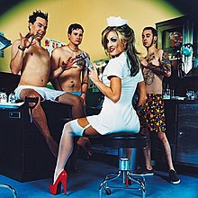
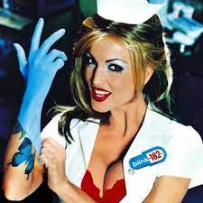

Enema of The State
Released 1st of June 1999
Musicians:
- Mark Hoppus, Base Guitar & Vocals
- Tom DeLonge, Guitar & Vocals
- Travis Barker, Drums
First enormous commercial success despite critics saying the band was synthesized, manufactured pop only remotely resembling punk, and pigeonholed as a joke act due to the puerile slant of its singles and associating music videos.


Side One
- Dumpweed
- Don't Leave Me
- Aliens Exist
- Going Away To College
- What's My Age Again
- Dysentry Gary
Side Two
- Adam's Song
- All The Small Things
- The Party Song
- Mutt
- Wendy Clear
- Anthem
- In 2014 it was ranked #1 in The 51 Most Essential Pop Punk Albums of All Time.
- First album that new drummer Travis Barker appeared on after the original drummer Scott Raynor was kicked from the band due to alcohol related problems.
- Jerry Finn, producer
- Enema of The State has sold over 15 million copies worldwide.